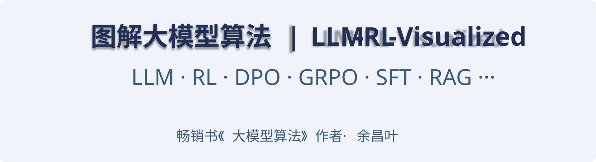

圖解大型模型演算法：LLM / RL / VLM 核心技術圖譜

簡 介
🎉 原創 100+ 架構圖，系統講解大型模型、強化學習，涵蓋：LLM / VLM 等大型模型原理、訓練演算法（RL、RLHF、GRPO、DPO、SFT 與 CoT 蒸餾等）、效果最佳化與 RAG 等。
🎉 關於架構圖更詳細的解讀可參考：《大型模型演算法：強化學習、微調與對齊》 (豆瓣高分，多次京東AI圖書Top 5 ！)
🎉 本儲存庫長期勘誤、追加，歡迎點選儲存庫上方的 Star ⭐ 關注，感謝鼓勵✨
🎉 點擊圖片可看高解析度大圖，或瀏覽儲存庫目錄中的 .svg 格式向量圖（活圖，可無限縮放、可選擇文字）